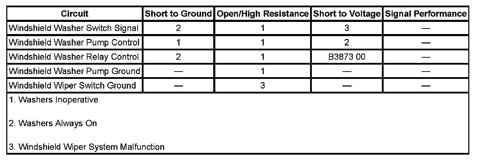
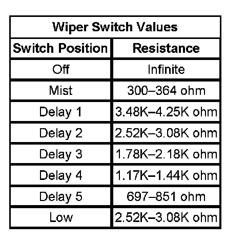

Washer Malfunction
WASHER MALFUNCTION
DIAGNOSTIC FAULT INFORMATION

Perform the Diagnostic System Check - Vehicle prior to using this diagnostic procedure. Initial Inspection and Diagnostic Overview
CIRCUIT/SYSTEM DESCRIPTION
The windshield washer function is controlled by the body control module (BCM). When the washer switch is pressed, ground is applied through the switch contacts and the signal circuit to the BCM indicating the wash request. The BCM then applies ground through the control circuit to the coil side of the FRT WASH relay energizing the relay. With the relay energized, battery voltage is applied through the switch contacts of the relay, the FRT WASH fuse and the control circuit to the windshield washer fluid pump.
CIRCUIT/SYSTEM VERIFICATION
1. Ignition on, verify that a test lamp connected to ground does not illuminate on either side of the FRT WASH fuse while the windshield washer switch is inactive.
- If the test lamp illuminates on one or both sides of the fuse perform the Windshield Washer Pump Always On Circuit Test.
2. Ignition on, verify that a test lamp connected to ground illuminates on at least one side of the FRT WASH fuse while pressing the windshield washer switch.
- If the test lamp does not illuminate on either side of the fuse, perform the Windshield Washer Switch Circuit Test.
3. If the test lamp illuminates on one or both sides of the fuse perform the Windshield Washer Pump Circuit Test
CIRCUIT/SYSTEM TESTING
Windshield Washer Switch Circuit Test
1. Ignition ON, verify that the scan tool Windshield Washer Switch parameter is Active while pressing the washer switch.
- If not Active, test the following:
- Perform the multifunction switch component test.
- Test the windshield washer switch signal circuit for an open/high resistance. If the washer switch and circuit test normal, replace the body control module.
2. IMPORTANT: The underhood fuse block bottom view illustration is an inverted view of the connectors in the bracket assembly.
Ignition OFF, disconnect the the underhood fuse block and connect a 60A fused jumper wire from the battery supply terminal in connector C6 to the LBEC 2 fuse output circuit 42 in connector C5 terminal F2.
3. Connect a test lamp from battery voltage to the windshield washer pump relay control circuit in connector C4 terminal A3.
4. Ignition ON, verify that the test lamp illuminates while pressing the washer switch.
- If the test lamp does not illuminate, test the washer relay control circuit for a short to voltage or an open/high resistance. If the circuit tests normal, replace the body control module.
5. If all circuits test normal, replace the underhood fuse block.
Windshield Washer Pump Circuit Test
1. Ignition OFF, disconnect the harness connector at the windshield washer fluid pump.
2. Test for less than 1 ohm of resistance between the ground circuit terminal B and ground.
- If greater than 1 ohm, repair the ground circuit for an open/high resistance.
3. Ignition ON, verify that a test lamp illuminates between the washer pump control circuit terminal A and ground while pressing the washer switch.
- If the test lamp does not illuminate, test the control circuit for a short to ground or an open/high resistance. If the circuit tests normal, replace the underhood fuse block.
4. If all the circuits test normal, replace the windshield washer fluid pump.
Windshield Washer Pump Always On Circuit Test
1. Remove the FRT WASH fuse from the underhood fuse block. The washer pump should turn OFF.
- If the washer pump does not turn OFF, test the washer pump control circuit for a short to voltage.
2. Ignition ON, verify the scan tool Windshield Washer Switch parameter is Inactive.
- If not Inactive, test the following:
- Perform the multifunction switch component test.
- Test the windshield washer switch signal circuit for a short to ground. If the washer switch and circuit test normal, replace the body control module.
3. IMPORTANT: The underhood fuse block bottom view illustration is an inverted view of the connectors in the bracket assembly.
Ignition OFF, disconnect the the underhood fuse block and connect a 60A fused jumper wire from the battery supply terminal in connector C6 to the LBEC 2 fuse output circuit 42 in connector C5 terminal F2.
4. Ignition ON, verify that a test lamp does not illuminate between the windshield washer relay control circuit in connector C4 terminal A3 and battery voltage.
- If the test lamp illuminates, test the control circuit for a short to ground. If the circuit tests normal, replace the body control module.
5. If all circuits test normal, replace the underhood fuse block.
COMPONENT TESTING
Multifunction Switch
Wiper Switch Values:

1. Ignition OFF, disconnect the C3 harness connector at the turn signal/multifunction switch.
2. Test the resistance between terminals M and N. Rotate the wiper switch and compare the resistance readings to the values in the Windshield Wiper Switch Values table below for MIST, each DELAY and LOW speed.
- If the resistance is not within the specified range, replace the turn signal/multifunction switch.
3. Test for infinite resistance between terminals M and K while rotating the wiper switch to MIST, each DELAY and LOW speed positions.
- If the less than infinite, replace the turn signal/multifunction switch.
4. Test for less than 5 ohms of resistance with the wiper switch in the High speed position. to.
- If greater than 5 ohm, replace the turn signal/multifunction switch.
5. Test for infinite resistance between terminals M and L while rotating the wiper switch to MIST, each DELAY and LOW speed positions.
- If less than infinite, replace the turn signal/multifunction switch.
6. Test for less than 5 ohm of resistance while pressing the WASHER switch.
- If greater than 5 ohm, replace the turn signal/multifunction switch.
IMPORTANT: If the switch tests open in any switch position other than Off, test the wiper/washer switch signal circuits for a short to voltage before replacing the switch.
REPAIR INSTRUCTIONS
Perform the Diagnostic Repair Verification after completing the diagnostic procedure.
- Turn Signal Multifunction Switch Replacement
- Windshield Washer Pump Replacement
- Underhood Electrical Center or Junction Block Replacement
- Control Module References for BCM replacement, programming, and setup. Verification Tests Programming and Relearning